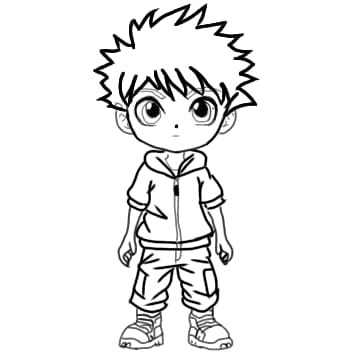
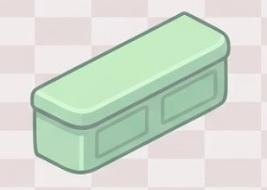
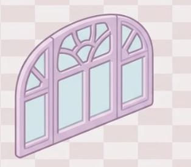
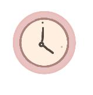
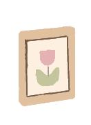
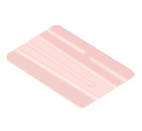
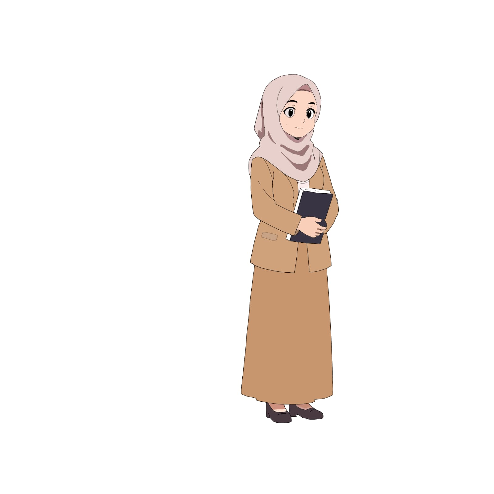
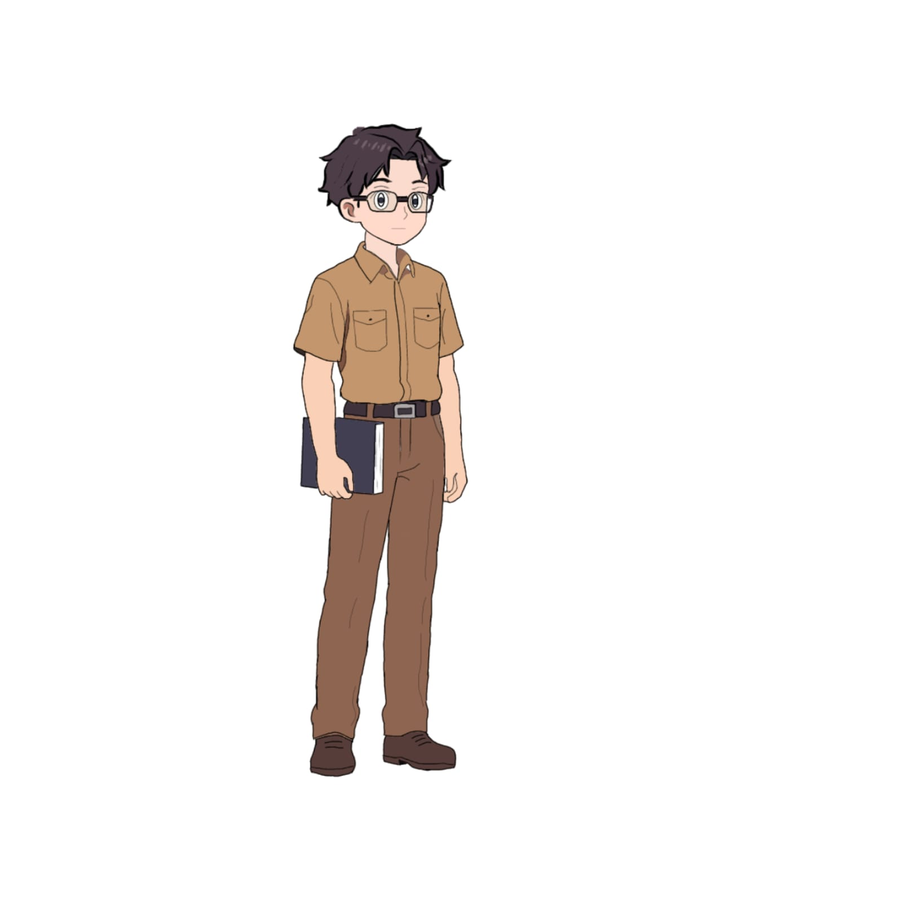

My Works
Galeri Project

Gurup
Karya ilustrasi digital.

Jam Lantai Besar
Desain objek jam dalam ilustrasi digital.

Sofa 1
Ilustrasi desain sofa.

Laci
Ilustrasi desain laci.

Pintu
Ilustrasi desain pintu.

Jam
Desain jam menggunakan IbisPaint.

Lukisan
Karya lukisan digital.

Karpet
Ilustrasi desain karpet.

Gurup
Karya ilustrasi digital.

Gurul
Karya ilustrasi digital.
Tambahkan gambar ilustrasi atau aset 2D kamu di bagian galeri.